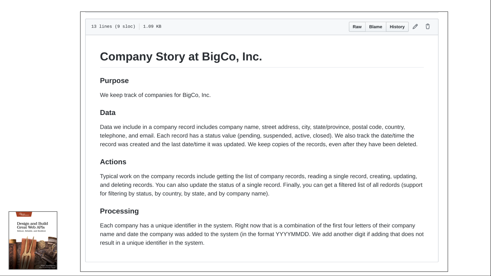
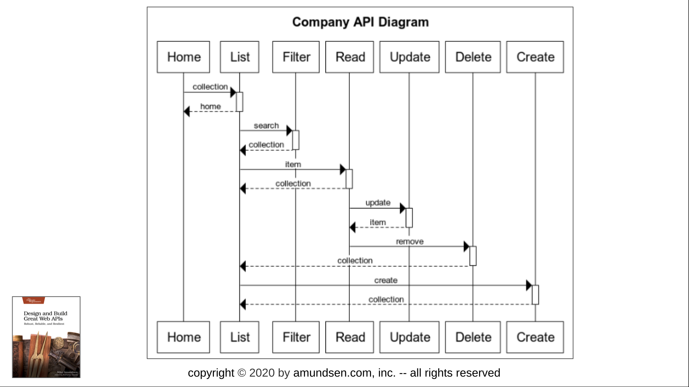
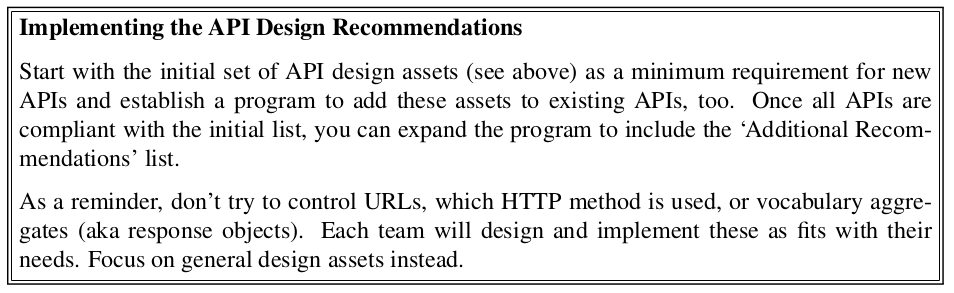
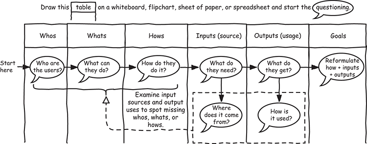
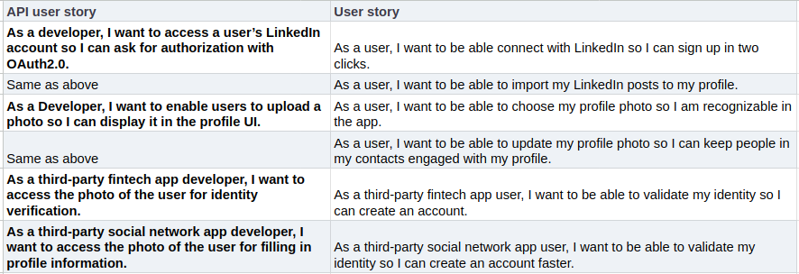
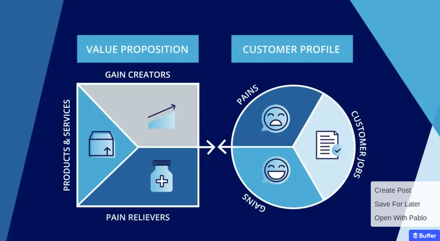
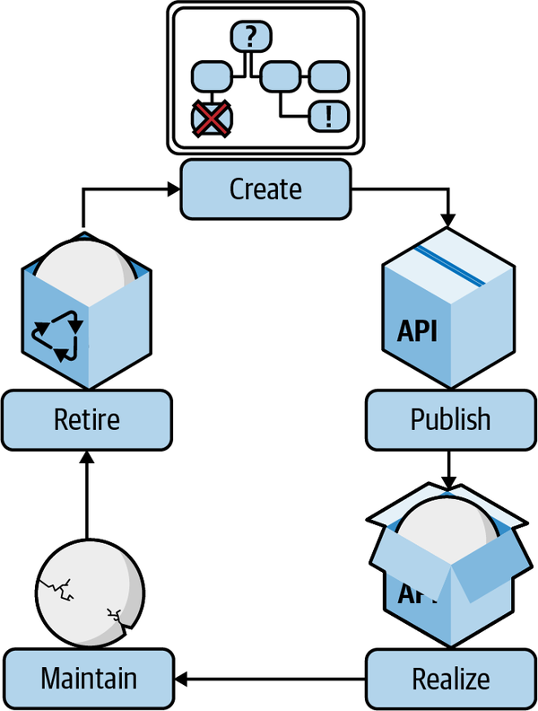
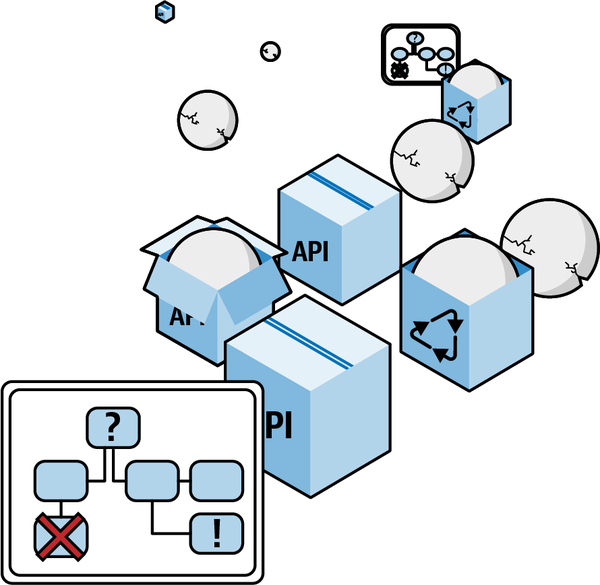
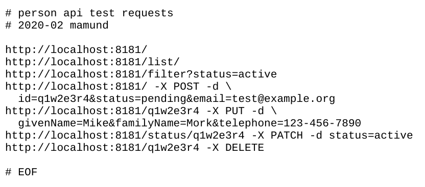
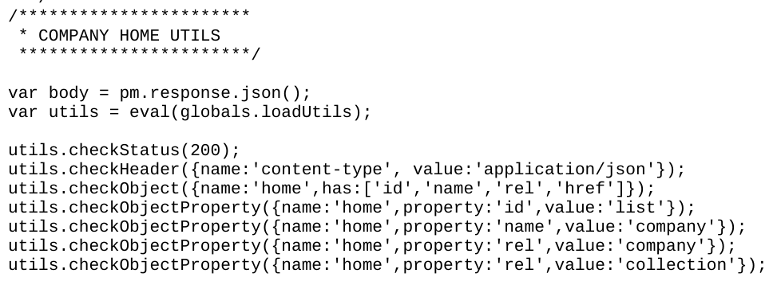

API Design Consistency
(4) API Design

(5) API Design Consistency
A mature API development capability involves consistency in API design and adherence
to industry standards, making it easier for developers to use the APIs.
- Technology Agnostic Design
- Initial Recommendations
- Additional Recommendations
- Don't ...
(6) Technology Agnostic Design
- Design is not implementation
- Good design guidelines work across styles and formats
- Concentrate on design assets
- Rely on shared practices for all APIs
- Design guidelines should ...
- Promote clear understanding
- Make it easy to target multiple implementations
- Make it easy to identify data and actions
(7) Initial Recommendations

- API Story
- API Description Document
- API Security Profile
(8) Additional Recommendations

- API Vocabulary Document
- API Workflow Diagram
(9) Don't ...
- Don't try to control URLs
- Don't (re)define the use of HTTP methods
- Don't require agreement on aggregates
- DO need agreeement on
givenName, familyName, postalCode
- DO NOT need agreement on
customer, user, etc.
Allow each team to design/implement these elements as best fits their needs and common
practice for that style/format.
(10) API Design Summary

API Lifecycle Management
(23) API Lifecycle Management
(24) API Lifecycle Management
- Create
- Publish
- Realize
- Maintain
- Retire
Teams that follow a clearly defined API lifecycle are more productive and better equipped
to deliver a high-quality API.
[https://www.postman.com/api-platform/api-lifecycle/]
(25) API Lifecycle Management – Create
- New API or replacement for an existing API
- Milestones
- API Story
- API Description
- Security Profile
- Workflow Diagram
- Vocabulary Document
- Arnaud Lauret's API Goals Canvas
See Chapter 2 ("Designing an API for its Users") from [https://learning.oreilly.com/library/view/the-design-of/9781617295102/OEBPS/Text/c02.xhtml] by Arnaud Lauret
(26) Lauret's API Goals Canvas

(27) API Lifecycle Management – Publish
- An API instance has been deployed to a production environment
- The API has been registered in the corporate registry
- Write API stories to solve multiple user stories
(28) API Stories

(29) API Lifecycle Management – Realize
- API is being used in a way that realizes its objective, business or technical
- Use Key Performance Indicators (KPIs)
- "Reduced downtime by 15%", "Increased closed sales by 10%", etc.
- Osterwalder's "Value Proposition Canvas"
See [https://leanpub.com/apiproductmanagement] by Andrea Zulian and Amancio Bouza
(30) Osterwalder's Value Proposition Canvas

(31) API Lifecycle Management – Maintain
- Its realized value is stagnant or downward-trending
- KPI goals attained
- Aim to reduce support costs
(32) API Lifecycle Management – Retire
- An end-of-life decision has been made
- Milestones
- Reached a "floor" on users or traffic
- Reached as "ceiling" on costs and/or support effort
- A better replacement is available
- Methodology
- Announce retirement in advance (months? years?)
- Suggest replacements to users
- Publish API as open source
- Provide ability for users to recover data
- Mark API as
HTTP 410 Gone
(33) API Lifecycle Management – Cycle

(34) API Lifecycle Management – Landscape

(35) API Lifecycle Management – Summary
(36) API Lifecycle Management – Summary
- Create
- New API or replacement for an existing API
- Publish
- The API has been promoted to a production environment
- Realize
- It is being used in a way that realizes its objective, business or technical
- Maintain
- It is no longer actively being improved
- Retire
- An end-of-life decision has been made
See Chapter 7 ("The API Product Lifecycle") from [https://learning.oreilly.com/library/view/continuous-api-management/9781098103514/ch07.html] by Medjaoui, Wilde, Mitra, Amundsen
Automation
(38) Automation
(39) Automation
- Testing
- Deployment
- Alerting and Recovery
[M]inimize or eliminate most manual interventions, reduce human errors, and speed
up the development cycle.
[https://konghq.com/blog/enterprise/transformation-with-api-automation]
(40) Automation – Testing
- Focus on testing the interface, not the service.
- Script your API tests
- Happy Path (HTTP 200) and Sad Path (HTTP 400)
- Protocol, Structure, Value tests
(41) Happy / Sad Path testing

(42) Protocol, Structure, Value testing

(43) Automation – Deployment
- Continuous Integration
- script the build and test
- Continuous Delivery
- script the packaging for deployment
- Continuous Deployment
- script the deployment into production
(44) Automation – Deployment
- A developer checks code into the repository.
- That check-in kicks off a series of local tests.
- If the tests pass, the code is built into a release package.
- If the build succeeds, the build is deployed to a staging server.
- If the staging server deployment succeeds, another set of integration tests are run.
- If the integration tests succeed, the build is deployed on a production server.
- If the production deployment succeeds, the job is done.
(45) Automation – Alerting and Recovery
- Spinning up additional instances when traffic spikes
- Rerouting traffic to different geographical regions
- Automatically increasing identity security checks (e.g., requiring two-factor authentication)
- Preemptively invoking traffic circuit breakers
- Automatically reversing problematic production updates
(46) Automation – Summary
(47) Automation – Summary
- Testing
- test the interface with happy, sad, and structured tests
- Deployment
- script builds, tests, integrations, and deployments
- Alerting and Recovery
- automate stability and reliability fixes
See Chapter 6 ("Diagnosing and Automating Traffic Management") from [https://learning.oreilly.com/library/view/api-traffic-management/9781492056393/ch06.html] by Mike Amundsen